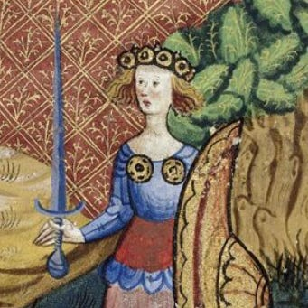

Feminist Theory Series 📚 kicks-off again on September 25th, and this time there is a twist! In a continuing effort to build the feminist community here on the stacks, I have invited six of my favorite feminist writers ✨ to join us as special guest-participants.
Each special guest has chosen for us an essay or book chapter in their area of interest — a piece they want to share with others and discuss. We'll be reading texts across many disciplines: film theory, art history, history history, philosophy, and more! 👀
September 25, 1pm EST
The Problem with Work: Feminism, Marxism, Antiwork Politics,
and Postwork Imaginaries
post-structuralist feminism
anti-work
post-work
basic income
October 30, 8pm EST
Williams, Linda. "Film Bodies: Gender, Genre, and Excess." Film
Quarterly 44, no. 4 (1991): 2-13.
feminist film theory
psychoanalytic feminism
Taking a break for the holidays. 🎄

January 29, 1pm EST
Lerner, Gerda. The Creation of Feminist Consciousness: From the
Middle Ages to Eighteen-Seventy, Chapters 4 and 5 on "The Way of
the Mystics 1 and 2"
feminist history
mystics
feminist consciousness
Session Format & Details
- Platform: Privacy-first video calls via Jitsi (like Zoom, but privacy-first app)
- Duration: ~60-90 minutes per session
- Format: 20-minute intro discussion between host and guest participant, followed by a moderated group discussion
- Reading: Strongly encouraged - all materials provided in advance
- Group Size: Maximum 12 participants per session for intimate and in-depth discussions
FREE
Sign-up below for any or all of the sessions. Sessions will not be
recorded. You must attend to participate.

Hosted by
Philosophy Publics' own Mona Mona,
Philosophy PhD with 10+ years teaching experience,
and creator of Feminist Works weekly roundups.
Philosophy PhD with 10+ years teaching experience,
and creator of Feminist Works weekly roundups.